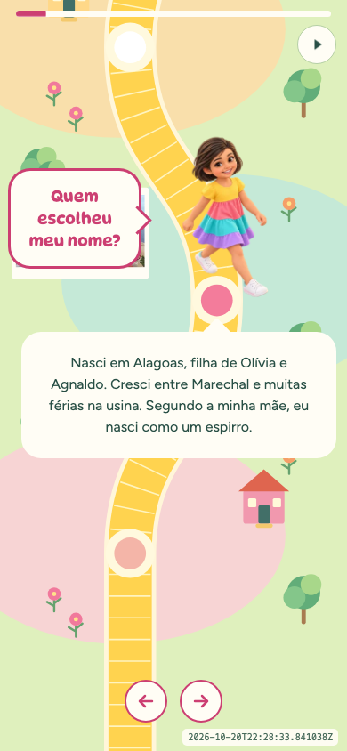
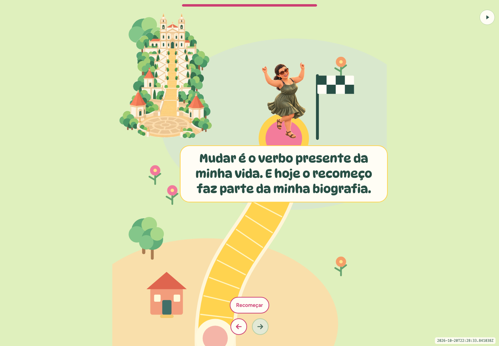

Uma homenagem que virou software.
O Jogo da Vida versão Magnólia transforma uma história de família em um tabuleiro interativo. São 12 casas, personagens personalizados e perguntas para puxar lembranças em voz alta.
Este backstage mostra como o projeto foi construído: decisões pelo Telegram, Hermes Agent em um MacBook Air M1, integração com Codex e publicação no GitHub Pages.

O jogo acontece na tela.
A conversa, fora dela.
Cada casa apresenta um trecho da história de Magnólia. O texto aparece com efeito de escrita e, depois de uma pausa, surge uma pergunta. A história continua visível para acompanhar a conversa.
O sistema não recebe respostas, grava áudio ou calcula uma pontuação. As perguntas são convites para a família participar. O avanço para a próxima casa continua nas mãos de quem está jogando.
A última casa encerra o percurso com uma reflexão, uma personagem própria e a opção de recomeçar.

Telegram como espaço de trabalho
O desenvolvimento aconteceu por mensagens: pedidos de alteração, envio de imagens, revisão de textos e correções de interface.
Um pedido como “alterar personagem da casa 11” precisava virar uma mudança precisa no projeto. Isso envolvia localizar a casa correta, preparar a imagem, preservar o texto e verificar o resultado no navegador.
A conversa também definiu comportamentos que o código sozinho não poderia escolher: manter a história quando a pergunta aparece, mover o balão sem deslocar a personagem e impedir que o jogo recomece por acidente.
O papel de cada ferramenta
- Telegram
- Foi o canal de direção e revisão. Por ele chegaram instruções, imagens e aprovações.
- Hermes Agent
- Executou o trabalho no ambiente de desenvolvimento: leitura e edição de arquivos, processamento de imagens, testes e publicação. Procedimentos recorrentes foram registrados em skills para orientar as próximas alterações.
- Codex
- Participou pelo provedor integrado ao Hermes, apoiando o raciocínio sobre o código e a implementação das mudanças. Neste fluxo, o Hermes organizava a execução das ferramentas.
- MacBook Air M1
- Foi a máquina de desenvolvimento e execução das ferramentas locais. O site publicado é servido pelo GitHub Pages e não depende de manter esse computador ligado.
A direção do projeto permaneceu humana: escolher o que contar, aprovar a redação e avaliar se a experiência fazia sentido.
Um sistema web com poucos componentes
A aplicação usa HTML, CSS e JavaScript, com um tabuleiro desenhado em SVG. Personagens, fotografias e fontes ficam nos arquivos do projeto.
O navegador cuida da navegação, das animações e da apresentação das histórias. A versão atual não exige um servidor de aplicação nem um banco de dados para funcionar.
O código está organizado em partes com responsabilidades distintas:
- Conteúdo
- Histórias, perguntas e ordem das casas.
- Interface
- Tabuleiro, personagens, balões e controles.
- Reprodução
- Efeito de escrita, pausa e apresentação automática da pergunta.
- Verificação
- Testes de conteúdo, navegação, imagens e layout.
- Publicação
- Arquivos estáticos no GitHub Pages.
Como uma mensagem vira uma atualização
- Pedido
- Revisão
- Implementação
- Testes
- Publicação
- Conferência pública
O trabalho começa pela identificação do que deve mudar e do que precisa continuar igual. Novos textos passam por aprovação antes de entrar no site. A remoção do fundo de uma imagem também depende de autorização.
Depois da implementação, os testes verificam o comportamento e a apresentação em diferentes tamanhos de tela. As capturas de tela ajudam a encontrar problemas que uma checagem de código não mostra.
A mudança é registrada no Git e publicada. A conferência continua no endereço público: o processo compara os arquivos servidos com a versão esperada e executa testes no site publicado.
Um timestamp ISO no canto da tela identifica a versão carregada.
A atualização também evoluiu
Durante o projeto, uma integração com Google Sheets permitiu trabalhar com uma fonte colaborativa de conteúdo.
Quando a revisão editorial foi concluída, essa dependência foi retirada por decisão do responsável pelo projeto. As histórias passaram a acompanhar os arquivos publicados.
Hoje, uma alteração exige uma nova publicação. Essa escolha mantém o conteúdo aprovado associado a uma versão do código e evita mudanças inesperadas vindas de uma fonte externa.
Os detalhes que exigiram engenharia
Algumas das mudanças mais importantes surgiram ao usar o jogo:
- Os balões precisavam acompanhar a personagem sem movê-la.
- A escrita animada precisava manter a caixa estável e oferecer o texto completo a leitores de tela.
- A pergunta deveria aparecer automaticamente, mas nunca levar o jogador sozinho para outra casa.
- A história precisava continuar disponível durante a pergunta.
- O botão Recomeçar não poderia deslocar as setas e provocar um clique acidental.
- A remoção de fundos precisava preservar roupas brancas, acessórios e todas as pessoas das ilustrações.
Cada correção ganhou verificações para reduzir a chance de reaparecer em uma atualização posterior.
O que este case demonstra
O projeto mostra um fluxo de desenvolvimento assistido por IA aplicado a um produto real: uma pessoa orienta pelo Telegram, o agente trabalha sobre arquivos e ferramentas, e o resultado passa por revisão e testes antes de ser publicado.
O valor aparece nas mudanças concretas que chegaram ao jogo, com o conteúdo aprovado preservado e uma versão verificável no ar.